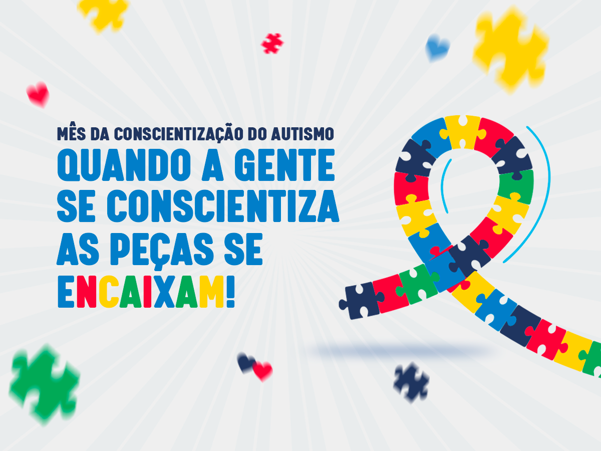
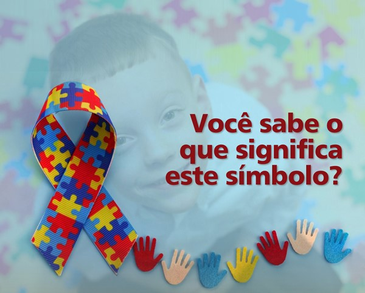
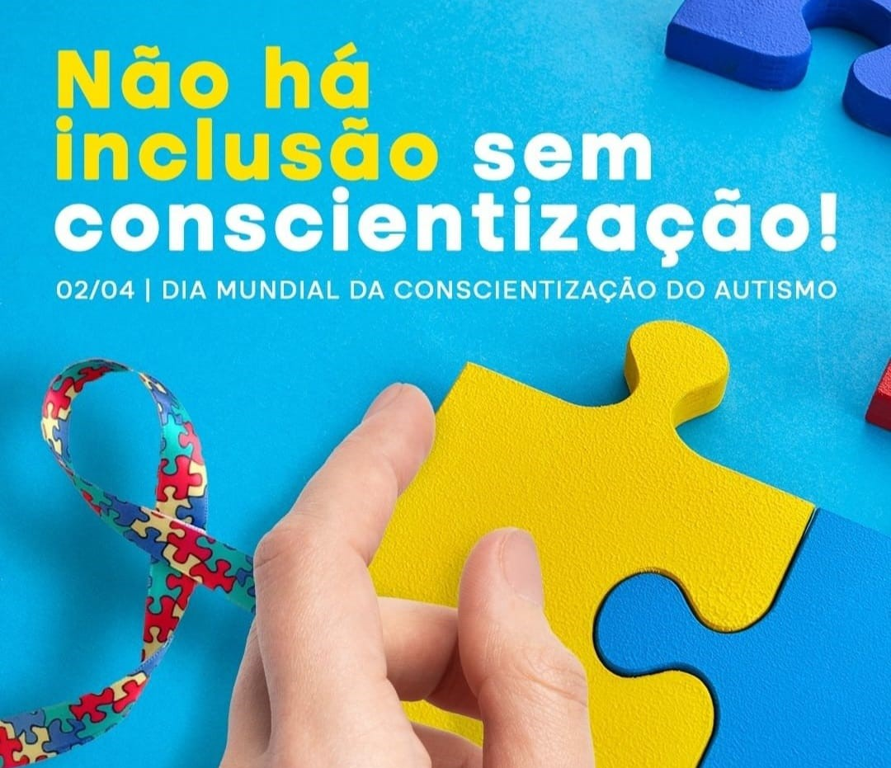

Bem Vindo ao Conexão Autista: Um Mundo de Descobertas
Abrace a diversidade do autismo e promova a inclusão em nossa sociedade.

@Victor_21
04/03/2024
"Apesar dos desafios, a jornada de superação do autismo é uma prova do poder da resiliência e do potencial humano."

@Mateus_2000
25/01/2024
"Os símbolos do autismo, como o quebra-cabeça, representam a complexidade e a diversidade das experiências autistas."

@Sandra_98
17/09/2023
"A conscientização sobre o autismo promove a compreensão e a inclusão, construindo uma sociedade mais empática e acolhedora."
Desvendando o Universo Autista: Celebrando a Diversidade Cognitiva
No vasto espectro da experiência humana, há um mosaico de perspectivas, cada uma pintada com cores únicas e complexas. No coração desse espectro reside o autismo, uma expressão singular da mente humana que desafia nossas noções convencionais de cognição e interação social.
O autismo não é uma limitação a ser superada, mas sim uma forma de ser celebrada e compreendida. Cada indivíduo autista traz consigo um mundo interior rico e intricado, repleto de talentos, interesses apaixonados e uma visão singular do mundo ao seu redor.
Em uma sociedade que muitas vezes valoriza a conformidade sobre a singularidade, é fundamental reconhecer e honrar a diversidade cognitiva. Cada pessoa autista é uma obra-prima única, uma síntese única de genes, experiências e conexões neurais.
A jornada de um indivíduo autista pode ser marcada por desafios únicos, mas também por triunfos extraordinários. Desde a infância, a descoberta do autismo pode ser um processo complexo para a família e para o próprio indivíduo, mas também é o início de uma jornada de autodescoberta e aceitação.
A aceitação é a chave para desbloquear o potencial de cada pessoa autista. À medida que aprendemos a valorizar e respeitar suas diferenças, abrimos portas para oportunidades de crescimento, aprendizado e contribuição significativa para a sociedade.
Saiba mais
O que é o transtorno do espectro autista?
Como identificar autismo leve?
Como diagnosticar autismo em adultos?
O transtorno do espectro autista (TEA) é um distúrbio do neurodesenvolvimento caracterizado por desenvolvimento atípico, manifestações comportamentais, déficits na comunicação e na interação social, padrões de comportamentos repetitivos e estereotipados, podendo apresentar um repertório restrito de interesses e atividades.
Comportamentos repetitivos: A repetição de gestos, movimentos ou sons é comum em crianças com autismo leve. Desafios na interação social: dificuldades em compreender as emoções dos outros, fazer amigos e manter relacionamentos interpessoais são características do autismo leve.
Quando pensamos em autismo, na maior parte das vezes, associamos a condição a crianças, porém é preciso compreender que o TEA pode acometer pessoas de todas as idades, inclusive adultos. Nesses casos, adultos que não foram diagnosticados na infância podem viver com o chamado “autismo de grau leve”.
A compreensão do autismo está em constante evolução, impulsionada pela pesquisa, pela experiência pessoal e pelo diálogo aberto. À medida que aprendemos mais sobre o espectro autista, expandimos nossa empatia e compaixão, construindo uma comunidade mais inclusiva e acolhedora para todos.
Neste universo diversificado de mentes brilhantes, cada pessoa autista é uma estrela única, iluminando o caminho com sua luz singular. Vamos nos unir para celebrar essa diversidade, cultivando um mundo onde todas as mentes possam florescer e brilhar com todo o seu esplendor.
“O aluno com autismo não é incapaz de aprender, mas possui forma peculiar de responder aos estímulos, culminando por trazer-lhe um comportamento diferenciado, que pode ser responsável tanto por Page 11 grandes angústias como por grandes descobertas, dependendo da ajuda que ele receber”. (CUNHA, 2011, p. 68).
À medida que chegamos ao fim desta jornada pelo mundo do autismo, é importante lembrar que a compreensão e o apoio são fundamentais. O autismo não é apenas uma condição, mas sim uma parte essencial da diversidade humana. Cada pessoa no espectro do autismo traz consigo um conjunto único de habilidades, perspectivas e potenciais.
É crucial que continuemos a promover a aceitação e a inclusão em nossas comunidades, locais de trabalho e escolas. Ao fazer isso, podemos criar ambientes onde todos possam prosperar, independentemente de suas diferenças.
Além disso, devemos continuar a educar a nós mesmos e aos outros sobre o autismo. A conscientização e o conhecimento são poderosos aliados na luta contra o estigma e na promoção da igualdade de oportunidades para todos.
Por fim, quero agradecer a todos vocês que acompanharam este blog. Espero que tenha sido uma fonte de informação, inspiração e esperança. Lembre-se sempre de que, juntos, podemos construir um mundo mais inclusivo e acolhedor para todos, independentemente do seu lugar no espectro do autismo.
COMENTÁRIOS
@Rodrigo_27
9 minutos
Promover a compreensão e a aceitação do autismo é fundamental para criar um ambiente inclusivo e empático. Reconhecer as habilidades e potenciais das pessoas autistas é essencial para cultivar uma sociedade mais equitativa e diversa. Educação, apoio e oportunidades adaptadas são cruciais para garantir que todos possam alcançar seu pleno potencial, independentemente do neurotipo. Juntos, podemos construir um mundo mais acolhedor e inclusivo para todas as pessoas, independentemente de sua neurodiversidade.